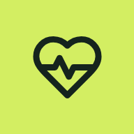

Remédios, consultas e diário da família
O Dito's Health foi feito para ser instalado no celular (Android ou iPhone).
Feche esta página e abra o Dito's Health pelo ícone na tela inicial.
Depois de abrir: digite o PIN da família, seu nome e toque em Ativar avisos.
Dúvidas? Fale com o Luis.